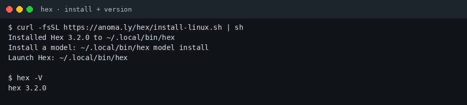
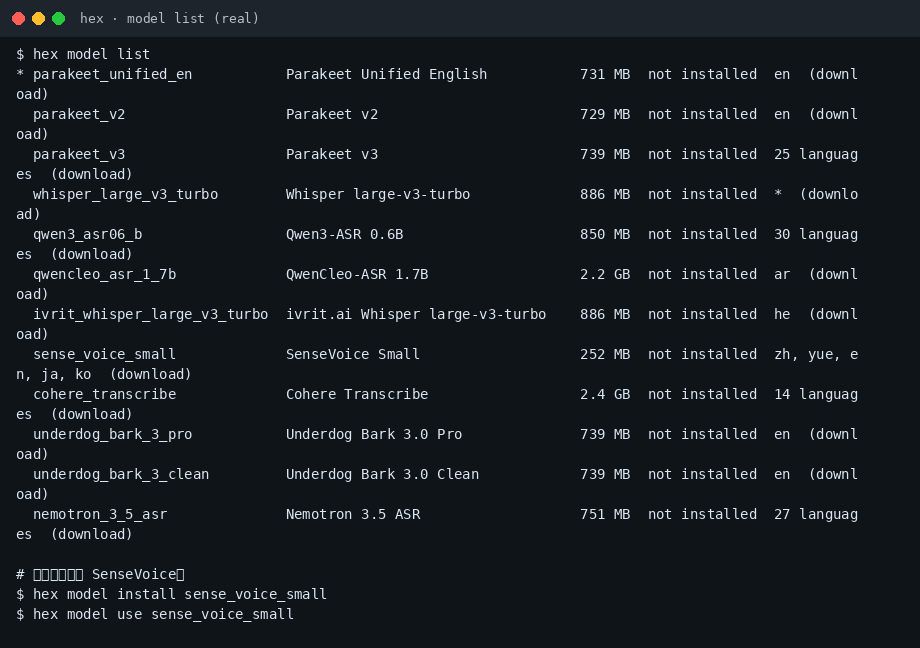
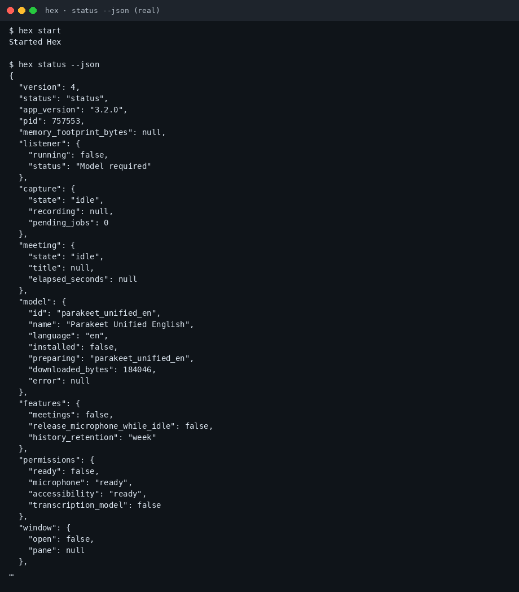

Hex 小白中文教程
社区非官方导读 · 上游 anomalyco/hex · 官网
完整图文教程在 GitHub README：
30 秒上手
curl -fsSL https://anoma.ly/hex/install-linux.sh | sh hex -V hex start hex model install sense_voice_small hex model use sense_voice_small
截图



记住三件事
- 中文听写优先 SenseVoice，不要停在默认英文 Parakeet
- 控制命令前先
hex start - 转录默认本地；勿把密钥或私人路径贴进公开仓库